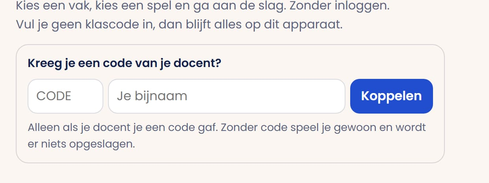
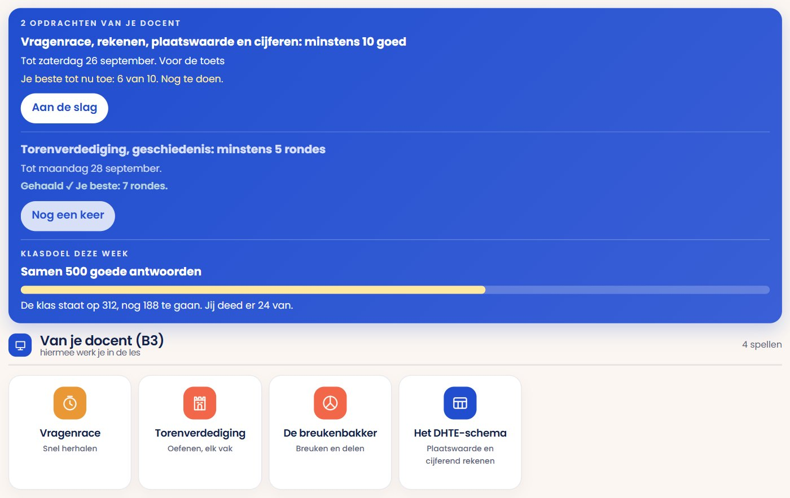
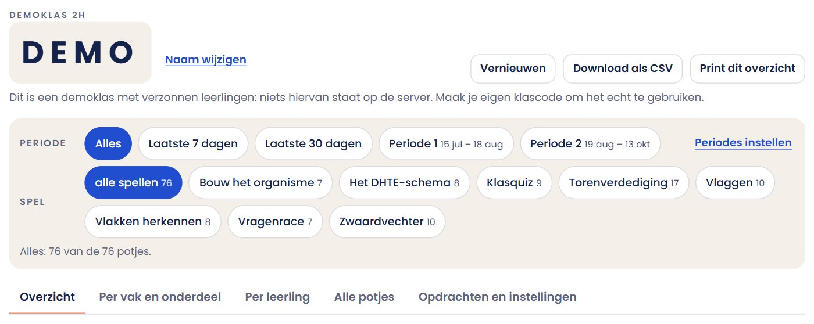
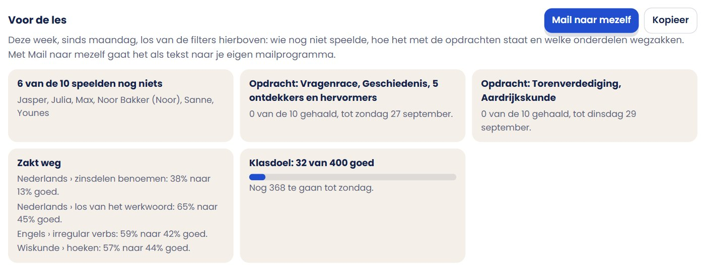
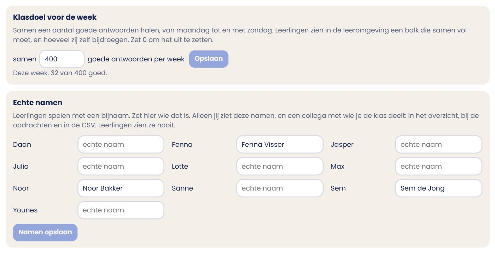
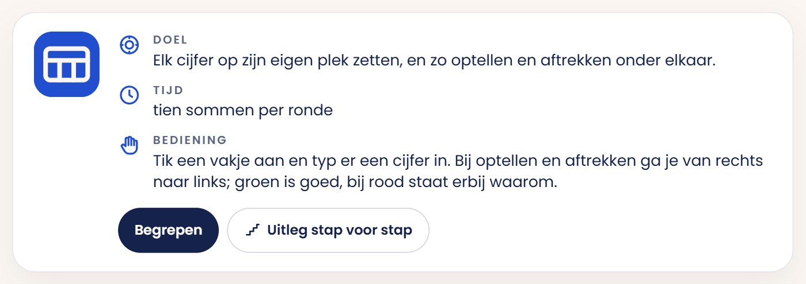
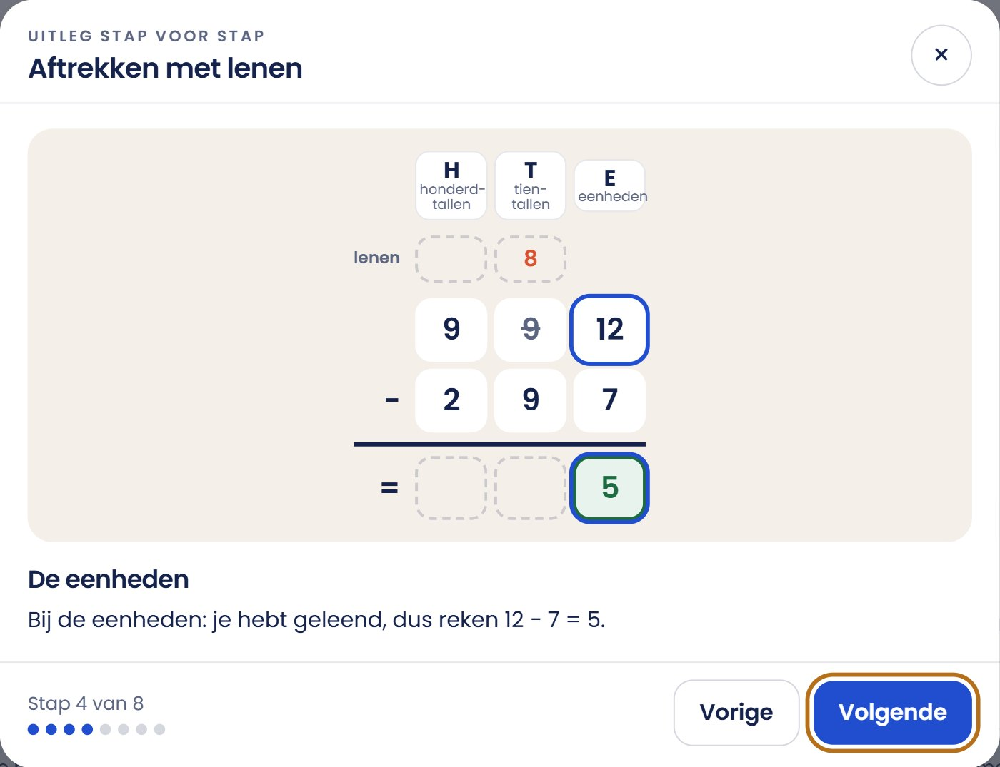
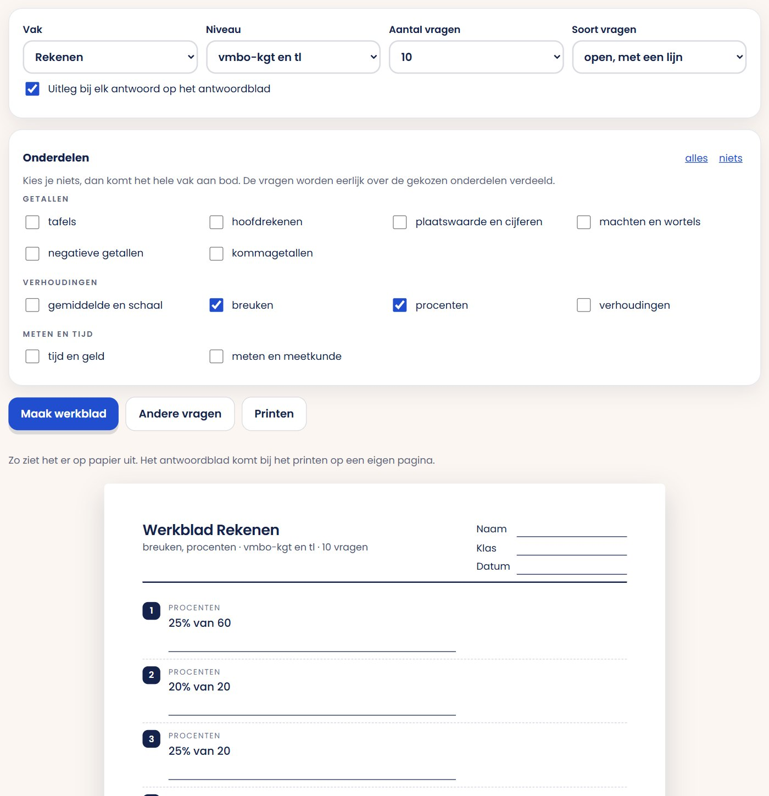

voor collega's
Zo gebruik je dit in je les
Stap voor stap, met plaatjes erbij. Op de plaatjes staan rode kaders met een cijfer erbij: die zetten een rand om precies datgene waar je moet zijn. Je hoeft niets te installeren en het kost niets.
- Leerlingen gaan naar meneergreidanus.nl/leermiddelen, kiezen een vak en een spel, en oefenen.
- Wil je zien wat ze doen? Log in met Microsoft, maak een klascode en geef die aan je klas. Leerlingen vullen hem één keer in; daarna zie jij hun uitslagen.
- Klassikaal? Doe de Klasquiz of Tekenslag op het digibord. Leerlingen doen mee met hun laptop.
- Klikken
- één keer op de linkerknop van de muis drukken. Op een aanraakscherm: tikken met je vinger.
- Adresbalk
- de balk bovenin je browser waar het webadres staat. Daar typ je meneergreidanus.nl in.
- Klascode
- vier letters die bij jouw klas horen, bijvoorbeeld KJEA. Leerlingen vullen die één keer in.
- Bijnaam
- de naam die een leerling zelf intypt en die jij in het overzicht ziet staan.
- Digibord
- het grote scherm voor de klas. Daar open je een spel dat je samen speelt.
- Inloggen
- je aanmelden met je schoolaccount van Microsoft. Voor een leerling mag het, voor jou als docent hoort het erbij. Zie stap 5.
Wat ziet een leerling?
Zo ziet de leeromgeving eruit. Je hoeft niets in te stellen: je klas kan meteen beginnen.
 1
2
3
1
2
3
- Onder de begroeting staat het vakje voor de klascode. Daar vult een leerling straks jouw code in (stap 4). Zolang hij geen code heeft ingevuld staat het er; daarna verdwijnt het.
- Links staan de vakken. Klik op een vak en je ziet alleen de spellen van dat vak.
- In het midden staan de spellen. Klik op een spel en het begint. Bij elk spel staat een regel uitleg.
Het docentgedeelte openen
Alles voor de docent staat op één pagina: meneergreidanus.nl/docent. Typ dat in de adresbalk en druk op Enter. (Of klik rechtsboven in de leeromgeving op Voor docenten.)
 1
2
3
1
2
3
- Bovenin staat of je bent ingelogd. Ben je dat niet, klik dan op Inloggen met Microsoft (zie de volgende bladzijde). Zonder inloggen kun je geen klascode maken.
- Hier maak je een klascode en zie je je klassen.
- Onderaan staan de handleiding, de lesbrieven, de Klasquiz en Tekenslag.
Maak een klascode
Een klascode is vier letters, bijvoorbeeld KJEA. Daarmee komen de uitslagen van je klas bij jou terecht. Het maken duurt tien seconden. Je moet wel eerst ingelogd zijn.
- Klik in het witte vak onder Naam van de klas en typ de naam, bijvoorbeeld: 2H geschiedenis.
- Klik op de knop Maak klascode. Je code verschijnt meteen eronder. Schrijf hem op het bord.
 1
2
1
2
Leerlingen koppelen zich
Dit doen de leerlingen zelf, één keer per laptop. Zeg dit letterlijk tegen je klas:
- Ga naar meneergreidanus.nl/leermiddelen.
- Onder de begroeting staat Kreeg je een code van je docent?
- Typ bij CODE de vier letters van het bord.
- Typ ernaast bij Je bijnaam je voornaam.
- Klik op de blauwe knop Koppelen. Klaar: er staat nu dat je gekoppeld bent.

3 4 5Inloggen met Microsoft: wat is dat?
Voor een leerling is inloggen een keuze: alles werkt ook zonder. Voor een docent hoort het erbij, want een klascode maken kan alleen ingelogd. Hieronder staat wat het is en wat het oplevert.
 1
2
1
2
- Klik rechtsboven op het rondje met het gezichtje. Er klapt een venster open.
- Klik op Inloggen met Microsoft.
- Je komt op het bekende inlogscherm van Microsoft. Kies daar je schoolaccount (of een gewoon Microsoft-account) en typ je wachtwoord.
- Je komt vanzelf terug op de site. Rechtsboven staat dan je naam. Meer gebeurt er niet.
Wat levert het op?
- Voor jou als docent: je klassen reizen mee. Maak je thuis een klascode, dan staat die klas ook op de computer in je lokaal en op het digibord. Je kunt je klas dus niet kwijtraken, en daarom kan een klascode maken alleen ingelogd.
- Voor een leerling: zijn voortgang, zijn gezichtje en zijn munten gaan mee naar elk apparaat. Munten verdient hij met goede antwoorden en geeft hij uit aan hoeden, brillen en achtergronden.
- Leerlingen hoeven niet in te loggen. De uitslagen lopen via de klascode en werken ook zonder.
Kies wat je klas ziet
Je kunt per klas aanvinken welke spellen je leerlingen zien. Handig als je wilt dat iedereen met hetzelfde bezig is. Kies je niets, dan zien ze gewoon alles.
 1
2
1
2
- Klik de spellen aan die je klas mag spelen. Ze kleuren blauw. Nog een keer klikken zet ze weer uit.
- Zet Lesmodus aan als je wilt dat ze tijdens jouw les echt niets anders zien. Vergeet niet hem na de les weer uit te zetten.
Bij je leerlingen staan die spellen boven aan de pagina onder Van je docent, met jouw klasnaam erbij. Staat de lesmodus uit, dan kunnen ze de rest nog uitklappen onder "Alle andere spellen". Staat hij aan, dan zien ze alleen jouw keuze en verdwijnen ook de vakken en het zoekveld.
Wat ziet een gekoppelde leerling?
Zodra een leerling aan jouw klas gekoppeld is, opent zijn pagina niet meer op alle vierendertig spellen maar op wat jij hebt klaargezet. Hij hoeft dus niets te zoeken.

1 2 3Geen klascode? Dan verandert er niets: die leerling ziet gewoon alle spellen, net als in stap 1.
Kijk wat je klas kan
Na elk potje meldt het spel de uitslag bij jouw klascode, met per onderdeel hoeveel er goed was. Ga naar het docentgedeelte (meneergreidanus.nl/docent) en klik op je klas. Je hoeft zelf niets bij te houden.

1 2 3 4- Periode: alles, de laatste 7 of 30 dagen, of een periode die je zelf instelt.
- Periodes instellen: geef een periode een naam en een begin- en einddatum, bijvoorbeeld je toetsweken. Ze staan bij de klas, dus je ziet ze op al je apparaten.
- Spel: kijk naar een spel, of naar alles. Het getal is het aantal potjes in de gekozen periode.
- Tabbladen: het overzicht, per vak en onderdeel, per leerling, alle potjes, en de opdrachten met de instellingen.
 5
6
7
8
5
6
7
8
- Kies een vak. Achter elk vak staat hoe de klas het doet. Een vak met een streepje is nog niet per onderdeel geteld.
- Elk vak is verdeeld in groepen, zoals spelling en lezen bij Nederlands of getallen en verhoudingen bij rekenen, en elke groep in onderdelen. Met per groep en per onderdeel kies je hoe fijn.
- De rij Hele klas is iedereen bij elkaar.
- Daaronder staat elke leerling. Een vinkje betekent dat hij het onderdeel beheerst: 80% of meer goed over minstens tien vragen.
Kies je een vak, dan staat onder het rooster ook een tabel per spel: het beste potje van elke leerling in elk spel van dat vak. Zo zie je ook spellen die niet per onderdeel tellen.
 1
2
1
2
Voor de les
Bovenaan het tabblad Overzicht staat wat je aan het begin van de les wilt weten, over deze week (sinds maandag) en los van de filters.

1 2 3 4 5Geef opdrachten mee
Huiswerk opgeven kan ook, tot vijf opdrachten tegelijk. Je vult één regel in en ziet daarna per opdracht wie hem gehaald heeft.
- Ga naar meneergreidanus.nl/docent, klik op je klas en open het tabblad Opdrachten en instellingen.
- Kies in de hokjes achter elkaar: het spel, het vak, eventueel één onderdeel, het minimum en de datum.
- Klik op Opdracht erbij. Wil je er nog een, vul de regel dan opnieuw in.
 1
2
3
1
2
3
De leerling ziet de opdrachten als eerste op zijn leeromgeving, nog boven de spellen, elk met een knop die hem direct naar het goede spel en het goede onderdeel brengt. Wat nog moet staat bovenaan, wat gehaald is eronder.
Voorbeeld: Vragenrace, geschiedenis, tijd van ontdekkers, minstens 15 goed, vóór vrijdag. Of: Vragenrace, rekenen, plaatswaarde en cijferen, minstens 10 goed.
Klasdoel, echte namen en een collega
Ook op het tabblad Opdrachten en instellingen: drie dingen die je één keer instelt.

1 2- Klasdoel: vul in hoeveel goede antwoorden de klas samen wil halen, van maandag tot en met zondag. Leerlingen zien een balk die samen vol moet en wat ze zelf bijdroegen. Zet 0 om het uit te zetten.
- Echte namen: leerlingen spelen met een bijnaam. Zet hier wie dat is en klik op Namen opslaan. Daarna staat overal in het overzicht, bij de opdrachten en in de CSV de echte naam met de bijnaam erachter. Leerlingen zien deze namen nooit.
- Deel met een collega: onder De klas zelf. Je krijgt een link; een collega die hem opent, heeft de klas daarna ook in zijn lijstje.
Samen op het digibord
Twee spellen speel je klassikaal. Jij opent een kamer op het digibord, de leerlingen doen mee met hun laptop. Ze hoeven daarvoor niets te installeren.
- Open op het digibord meneergreidanus.nl/leermiddelen/klasquiz.html (of klik in de leeromgeving op Klasquiz).
- Kies rechts waar de vragen vandaan komen: uit de vragenbank (vak en onderdeel) of je eigen vragen.
- Eigen vragen kun je bewaren onder Bewaar als set. Ben je ingelogd met Microsoft, dan staan je sets daarna onder Jouw sets en haal je ze met een tik terug, ook op een ander apparaat. Zonder inloggen werkt het ook: dan onthoud je de code van zes tekens.
- Klik op Open een kamer. Op het bord verschijnt een code van vier letters.
- De klas gaat naar meneergreidanus.nl/q, typt die code en een bijnaam, en klikt op Meedoen.

 2
1
2
1
- In teams: om de beurt tekent iemand uit een team, alleen zijn team raadt. Goed is een punt en meteen het volgende woord.
- Ieder voor zich: om de beurt tekent een leerling, de rest raadt. Wie het eerst goed heeft krijgt de meeste punten (10, 8, 6, 5, daarna 4), de tekenaar krijgt 3 punten voor elke leerling die het raadt.
- De docent tekent: jij tekent op het bord, de klas raadt. Je woord staat niet op het bord; je ziet het zolang je de knop onder het bord ingedrukt houdt.
Snel oefenen, elke dag iets


Uitleg stap voor stap
Elk spel heeft een knop Uitleg stap voor stap. Die legt de stof uit in kleine stappen, met een plaatje dat meebeweegt: hoe je optelt met onthouden in het DHTE-schema, hoe je breuken gelijknamig maakt, hoe je een vergelijking oplost op de balans.

1
2 3 4Werkbladen op papier
Geen laptops vandaag? Maak een werkblad uit dezelfde vragenbank: genummerde vragen en een apart antwoordblad, klaar om te printen.
- Ga naar meneergreidanus.nl/leermiddelen/werkblad.html, of klik in het docentgedeelte op werkblad maken.
- Kies het vak, het niveau, hoeveel vragen en of ze meerkeuze of open zijn. Vink de onderdelen aan.
- Klik op Maak werkblad en daarna op Printen. Het antwoordblad komt op een eigen pagina.

1 2De grote spellen
Deze twee duren langer en zijn populair. De vragen zijn dezelfde als in de andere spellen; het spel eromheen is alleen leuker.


Lesbrieven en de demoklas
Bij elk spel staat een lesbrief: wat leren ze, hoe lang duurt het, wat doe je ervoor en erna. Handig als je snel iets zoekt voor het komende uur. Wil je eerst zien hoe een klasoverzicht eruitziet zonder je eigen klas? Klik in het docentgedeelte op demoklas: verzonnen leerlingen, om rond te kijken.

Vragen die vaker komen
Nee. Voor leerlingen is het een keuze (zie stap 5). Alleen jij als docent moet ingelogd zijn om een klascode te kunnen maken.
Zonder klascode niets buiten het apparaat van de leerling. Met een klascode: de bijnaam, het spel, de score en per onderdeel hoeveel er goed was. Geen e-mail en geen adres. Echte namen alleen als jij ze zelf bij de bijnamen zet; die staan bij de klas en zijn alleen te zien met de sleutel van de klas, dus door jou en wie je de klas deelt. Jij kunt de klascode opheffen; dan is alles weg.
Ja. Open het spel op het digibord en tik op Uitleg stap voor stap, of zet ?uitleg achter het adres. Je loopt er samen met de klas doorheen, in jullie eigen tempo.
In het docentgedeelte staat hij onder Mijn klassen op dit apparaat. Staat hij daar niet meer, maak dan een nieuwe en laat de klas zich opnieuw koppelen. Log je in met Microsoft, dan kan dat niet gebeuren.
Laat hem de pagina herladen of de code opnieuw invullen: hij komt terug op zijn plek, met zijn punten en in zijn team. Na een dichtgeklapte laptop of weggevallen wifi gaat dat meestal vanzelf. Herlaadt het digibord bij Tekenslag of een van de rolspellen (zoals De crisis of de Conferentie van Berlijn), dan staat er bovenaan Verder met dit spel: de stand en de telefoons zijn er nog, en de stap die bezig was begint opnieuw.
Hij krijgt een melding en kan meteen opnieuw meedoen met dezelfde code. Het kruisje is bedoeld voor wie er per ongeluk in zit.
Bij 80% of meer goed over minstens tien vragen in dat onderdeel. Bijna is 60 tot 80%, nog niet is minder. Bij minder dan tien vragen zegt het klasoverzicht nog niets: dan is het nog te weinig.
Ja, maar de spellen zijn gemaakt voor laptops en het digibord. Tekenslag en de Klasquiz werken het prettigst op een laptop.
Nee. Er zit geen reclame in, je hoeft niets te betalen en er is geen proefperiode.
Onder elke vraag staat Klopt deze vraag niet? Daar kunnen leerlingen (en jij) het melden. Ik kijk het na.
Graag. Deel de link gerust met collega's. Vragen of wensen? Mail gerust via de pagina Over mij.